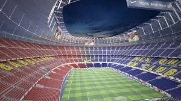
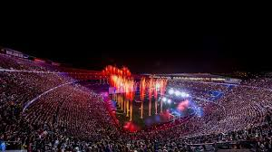

Stadion Camp Nou byl otevřen 24. září 1957 a nahradil starší stadion Les Corts. Původně měl kapacitu 93 000 diváků, která byla postupně rozšířena. Během své existence hostil legendární hráče jako Johan Cruyff, Ronaldinho, Messi a další. V roce 2022 byl stadion přejmenován na Spotify Camp Nou v rámci sponzorské dohody s platformou Spotify.

Camp Nou je známý svou otevřenou, monumentální konstrukcí. Aktuálně prochází rozsáhlou rekonstrukcí v rámci projektu Espai Barça, který zahrnuje modernizaci stadionu, výstavbu nového Palau Blaugrana a komerčních prostor. Nový stadion bude plně zastřešený, s moderní LED fasádou a kapacitou přes 105 000 míst – čímž se stane největším fotbalovým stadionem v Evropě.

Camp Nou není jen stadion – je to symbol katalánské identity a hrdosti. Během diktatury Franca se stadion stal jedním z mála míst, kde Katalánci mohli svobodně vyjadřovat svou kulturu. Byl dějištěm mnoha historických zápasů, finále Ligy mistrů, olympijských her v roce 1992 a koncertů hvězd jako U2 nebo Bruce Springsteen. Stadion každoročně navštíví přes milion turistů.
